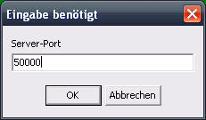

Ein Spiel aufmachen
Wenn Sie ein Spiel aufmachen wollen, wählen Sie im Hauptmenü Programm -> Neues Spiel oder drücken Sie F2 auf Ihrer Tastatur.
Danach werden Sie nach einem Port gefragt.

Beachten Sie, dass Sie nur Ports im Bereich von 49152 bis 65535 eingeben können, da nach IETF Richtlinie RFC 4340 die Ports 0 bis 49151 für andere Zwecke reserviert sind (verwaltet von der IANA) und nicht für private Zwecke gewählt werden sollten.
Sie können diese Einschränkung umgehen, indem Sie in der MauDauMau.ini Datei folgende Zeile im Client-Abschnitt anhängen: RFC4340=0
Nach der Auswahl eines korrekten Ports gelangen Sie in die Spielverwaltung.
Den Server-Namen sowie das Server-Passwort können nur in den Server-Optionen eingestellt werden. Sie werden beim Aufmachen des Spieles nicht abgefragt.